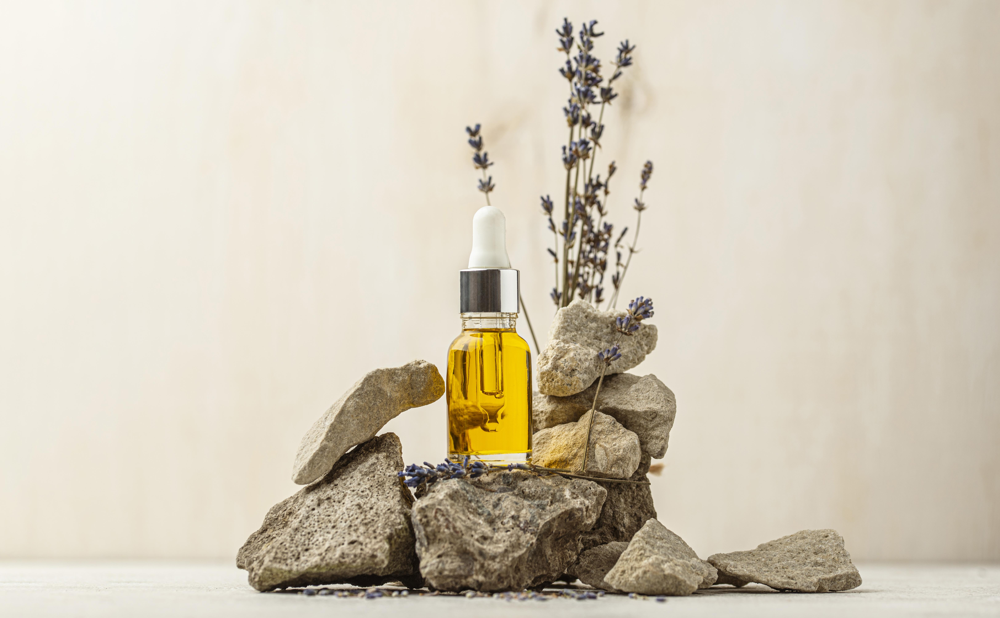

O que é aromaterapia?
A aromaterapia é reconhecida como “uma antiga arte e ciência de misturar óleos essenciais extraídos de plantas e outros compostos vegetais para equilibrar, harmonizar e promover a saúde do corpo e da mente”,
Atualmente, a aromaterapia é vista como um recurso terapêutico reconhecido pela Organização Mundial da Saúde (OMS). Assim, a prática é uma linha complementar de tratamentos de saúde.
O mesmo acontece no Brasil, onde a técnica é uma das Práticas Integrativas e Complementares utilizadas pelo Sistema Único de Saúde (SUS). ]
Origem
Em princípio, a medicina ayurveda tem registros de que o uso de produtos naturais em tratamentos de saúde é feito há mais de 2000 anos a.C.. Contudo, não se tem registrada a primeira extração de óleos essenciais, a matéria-prima da aromaterapia.
De acordo com os registros, o termo “aromaterapia” foi publicado pela primeira vez por Maurice René de Gattefossé, químico francês, em 1920. Ainda, a Internation Federation Aromatherapistis explica que a técnica surgiu de outra prática amplamente conhecida, a fitoterapia.
Diante do passar do tempo e da evolução das pesquisas sobre os seus efeitos, a técnica passou a ter um uso mais amplo e holístico. Isto é, a aromaterapia passou a apontar benefícios para a saúde física, mental e emocional do indivíduo.
Como a aromaterapia funciona?
A aromaterapia funciona da seguinte forma: as substâncias que compõem o aroma dos óleos essenciais desprendem partículas que estimulam as células nervosas. Diante disso, esse estímulo ativa áreas do cérebro relacionadas às emoções. Da mesma forma, também ocasionam reações fisiológicas.
Para que serve a aromaterapia?
Na prática, a aromaterapia serve para ajudar a lidar com distúrbios — como insônia e ansiedade —, amenizar dores e desconfortos, e a induzir sensações relaxantes e até estimulantes.
Para isso, é preciso saber escolher o óleo essencial que apresente os efeitos desejados. Quer um exemplo? O óleo de lavanda apresenta efeitos relaxantes e ajuda a combater a insônia. Já o óleo de limão tem recomendação para o desenvolvimento cognitivo.
Somado a isso, estudos vêm reforçando que a aromaterapia auxilia a fortalecer o organismo e a combater problemas fisiológicos.
Assim, a aromaterapia serve para diferentes objetivos, como:
- aliviar sintomas de ansiedade;
- induzir ao relaxamento;
- ajudar na saúde do sono;
- promover sensação revigorante;
- melhorar a saúde da mulher;
- tratar doenças respiratórias, como asma;
- amenizar dores musculares;
- estimular as defesas naturais do corpo;
- auxiliar no desenvolvimento cognitivo e concentração.
Alguns benefícios evidenciados em estudos
- Hemodiálise: para exemplificar a atuação da aromaterapia, uma revisão apontou que a técnica reduziu danos que impactam a vida de pacientes da hemodiálise. Dentre os danos estão: ansiedade, fadiga, qualidade do sono, depressão, estresse e dor de cabeça. Em um caso, melhorou a qualidade de vida dos pacientes em hemodiálise.
- Menopausa: os sintomas psicológicos em mulheres na pós-menopausa e idosas foi assunto de uma análise. Assim, uma significativa melhora relacionada à ansiedade e à depressão nas participantes que fizeram massagem com óleo essencial foi identificada.
- Dor do parto: em uma meta-análise, que avaliou 17 estudos, a aromaterapia reduziu a dor durante a fase de transição de dilatação de 8–10 cm do primeiro estágio do parto. Além dos efeitos analgésicos, reduziu a duração do parto da fase ativa e do terceiro estágio (com tendência de significância no segundo estágio).
- Dismenorreia (dor abdominal inferior que ocorre durante a menstruação): a superioridade da aromaterapia para redução da dor na dismenorreia primária é identificada em uma revisão. O estudo contou com 19 ensaios clínicos randomizados e controlados por placebo.
Por fim, saber o que é aromaterapia é o primeiro passo para se aproximar desta técnica. Em suma, vale destacar que há profissionais capacitados para recomendar óleos essenciais e métodos de aplicação. Além disso, a recomendação deve ser feita de acordo com a necessidade de cada indivíduo.